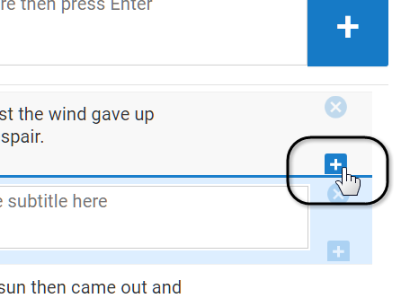

Quality Assurance (QA)
QA for Captions
When the captions have synced, provide quality assurance to ensure they are accurate. As you learned in Module II, quality assurance means you'll make captioning notations for music, changes in speaker, and sound effects that are important to the listener's comprehension of the content. Follow the procedure for Module II to add additional captioning boxes.

QA for Transcripts
To provide quality assurance for transcripts, you may need to rewatch the video one more time to determine exactly where to add the notations for music, changes in speaker, and sound effects.